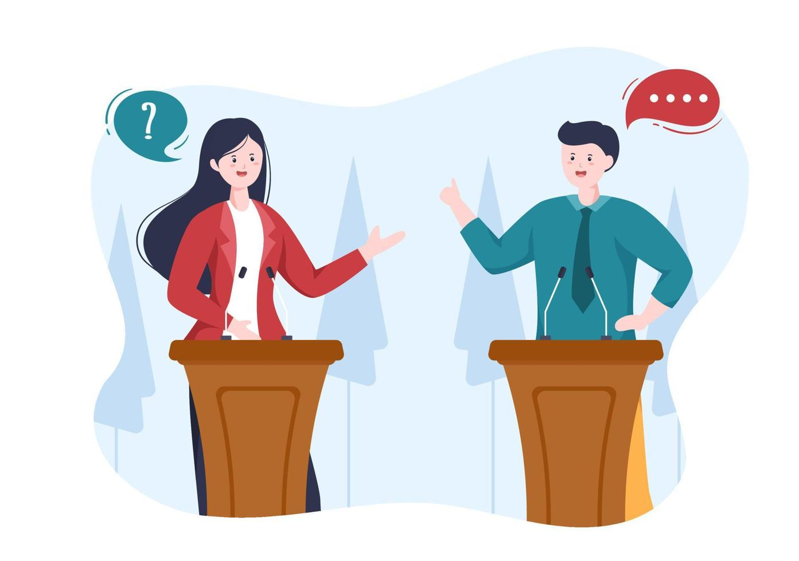

Introduction
Like how we went over in class, I want to see if I can debate with ChatGPT. I would ask it to choose a prompt and take a side. Then I will go back and forth with it, arguing. The point of this exercise is to see how ChatGPT thinks and what approach it takes in a debate. This would be particularly exciting as I am a political science major.
Getting Started
This is the prompt I asked ChatGPT. I wanted to keep it clear and concise to avoid confusion: >Can you generate a topic in which we can debate about? Take a side and we will go back and forth in the debate.
This is what it responded with:
Topic: Should college classes start later in the day to better align with students’ sleep schedules?
I’ll take the pro side: Yes, classes should start later, because research shows college students are chronically sleep-deprived, and later class times would improve learning, health, and overall productivity.
You can take the con side if you’d like. Want to start, or should I open with my argument?
I wanted it to open the debate.
Alright, here’s my opening:
College classes should start later in the day because the current system doesn’t reflect how students actually function. Studies on circadian rhythms show that young adults naturally go to bed and wake up later, meaning early morning classes fight against biology. When students are forced into 8 a.m. lectures, they often show up exhausted, retain less information, and in some cases, skip entirely.
By shifting classes later—even just by an hour—we’d see higher attendance, better academic performance, and healthier students overall. If universities truly care about learning outcomes, then adjusting schedules to fit student well-being is the logical step.
Your turn—why do you think we should keep early morning classes?
I said: > This does not take into account professors and faculty who have their own hours. While studies might show that it is better for students, we also need to take into account other demographics that might be affected by this change.
ChatGPT: >That’s a fair point—professors and faculty definitely have their own needs and schedules. But here’s the thing: universities already ask professors to accommodate a wide range of class times, from early mornings to evenings. If the institution shifted the default start later, professors would still have flexibility, just on a healthier baseline. > >Plus, professors benefit too—teaching a room full of tired, disengaged students isn’t productive or rewarding. Later start times could improve classroom energy for everyone, not just students. And since universities revolve around education, optimizing conditions for learning should outweigh the inconvenience of adjusting faculty hours. > >How would you address the issue that early classes cause lower attendance and worse performance, which undermines both students and professors?
I said: >There is a difference in age between professors and students. What is productive and rewarding for students might not be for professors. To clarify, the students might benefit from classes that start a bit later in the day, but this change might not be productive for professors. Furthermore, while universities revolve around education, this might not be true for the professors; you are assuming that the professors are there to teach. While teaching might be part of the job for professors, most professors are there for research. Hence, teaching might not be the main goal for the professors.
It said: >That’s an interesting distinction—you’re right that many professors prioritize research, and teaching is often only part of their role. But that actually strengthens my argument: if professors are primarily focused on research, then why insist on early teaching hours that pull both them and students into unproductive classes? > >If classes were scheduled later, professors could use early mornings for their own research—quiet, uninterrupted time before teaching begins. That way, their productivity doesn’t suffer; it may even improve. Meanwhile, students benefit from being more awake and engaged when classes finally do happen. > >So the change could balance both groups’ priorities: better teaching conditions for students, and more research time for professors. > >Would you argue that universities should prioritize faculty research needs over student learning outcomes, though?
I said: >Maybe they want to reserve their later hours for research. Also you did not rebuttal my previous point about productivity. Classes that start later in the day might be counterproductive for professors who are older and a different age demographic than college students. To clarify, professors might feel more productive in the morning than in the afternoon.
ChatGPT said: >Fair—let me address that directly. > >You’re right: professors, being from a different age group, may have different productivity windows. Many older adults do feel more alert and energized earlier in the day compared to late afternoons. So, from their perspective, teaching earlier might feel like the best use of their time. > >But here’s the tension: should class schedules be built around when professors feel most productive, or when students are most able to learn? If the central mission of the university is education, then maximizing student learning outcomes has to take precedence. A professor may feel more productive teaching at 8 a.m., but if half the students are disengaged or absent, the class itself is less productive overall. > >In other words: productivity for professors can’t just mean their own energy levels—it has to include whether their teaching is landing effectively. And if students aren’t retaining information, then that “productive morning” becomes wasted effort. > >So the crux is: whose productivity counts more—professors’ individual rhythm, or the collective educational success of the student body? > >Would you argue that professors’ personal productivity should outweigh students’ learning outcomes?
I decided to stop here.
Analysis
My takeaway from this debate exercise was that ChatGPT is highly logical and methodical in its approach, able to anticipate counterarguments and address them effectively. Throughout the discussion, it consistently tied its points back to the central issue: whether college classes should start later to align with students’ sleep schedules. Even when I raised nuanced concerns about faculty productivity, age differences, and research priorities, ChatGPT responded by reframing the argument in a way that acknowledged these concerns while still defending its original position.
One thing I found particularly impressive was its ability to balance multiple perspectives simultaneously. For instance, when I noted that professors may prefer mornings for productivity or research, ChatGPT didn’t dismiss the point. Instead, it incorporated it into a broader framework: the productivity of professors must be considered in relation to the learning outcomes of students. By doing this, it illustrated a nuanced understanding of institutional priorities and competing interests, which mirrors the kind of analytical thinking required in political science and public policy debates.
I also noticed that ChatGPT’s debating style mirrored strategies often emphasized in LSAT prep, particularly the Logical Reasoning section. Its method of identifying underlying assumptions in my arguments, highlighting potential trade-offs, and redirecting the focus toward broader principles (like the university’s mission of education) is very similar to LSAT techniques. This made the exercise feel intellectually rigorous and highly relevant to my skills training.
